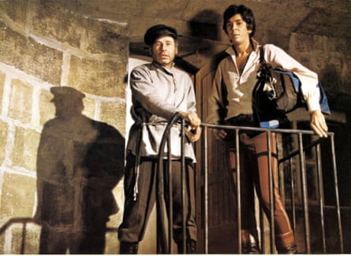
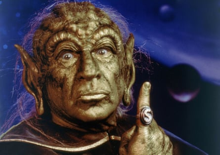
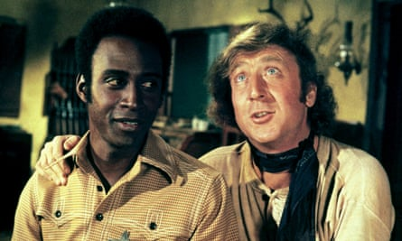
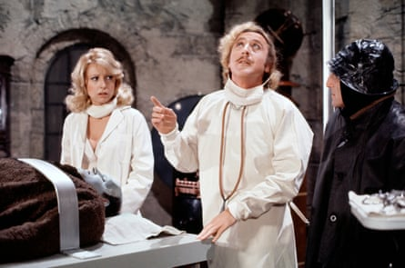

10. History of the World: Part I (1981)
“It’s good to be the king.” Brooks mixes sight gags, dad jokes and Borscht Belt standup in historical vignettes from the stone age to the French Revolution. Results are hit and miss, and the ancient Rome segment goes on for ever, but the tasteless Torquemada musical number is a scream.
9. The Twelve Chairs (1970)
Shameless hamming … The Twelve Chairs.Photograph: Ronald Grant
In the USSR, circa 1927, an ex-aristocrat, a conman and a priest search for a missing chair stuffed with jewels. Brooks’s second film, adapted from a popular Russian novel, feels ponderous compared to the rest of his work, despite shameless hamming from Ron Moody, Dom DeLuise and Brooks himself. Frank Langella, alas, is miscast in his first film role.
8. Robin Hood: Men in Tights (1993)
The Kevin Costner school of English heroism gets the Brooks treatment with Cary Elwes as Robin Hood, Dave Chappelle making his film debut as the outlaw’s sidekick, and a perplexing detour into The Godfather territory featuring DeLuise stroking a lizard. The laughs come fast, cheap and silly, but some of them hit the bullseye.
7. Life Stinks (1991)
Brooks plays the leading role in a Trading Places-adjacent morality tale of a billionaire who accepts a bet that he can survive on the Los Angeles streets for a month. This comedy about homelessness bombed, but has a winning integrity and some decent gags, such as Brooks responding to his cardboard shelter getting washed away with: “There goes the neighbourhood.”
6. Silent Movie (1976)
With intertitles instead of dialogue (“He is truly the lord of the winos” is my favourite) and a score comprising nothing but music and sound effects, Brooks’s meta-comedy, in which he plays a Hollywood director trying to make a silent film, is almost experimental. The celebrity cameos are cute, and Brooks’s tango with his real-life wife, Anne Bancroft, is adorable.
5. Spaceballs (1987)
Star quality … Mel Brooks in Spaceballs.Photograph: Cinetext Collection/Sportsphoto/Allstar
This Star Wars spoof arrived 10 years too late, but now seems more fun than any of the official sequels and spin-offs. You can gauge the level of humour by character names like Dark Helmet, Dot Matrix and Yogurt, but the cast (including Bill Pullman and John Candy) is game for anything, and there are some inspired postmodern gags. And hurrah! Spaceballs 2 is in development!
4. High Anxiety (1977)
Brooks, as the acrophobic head of the Psycho-Neurotic Institute for the Very, Very Nervous, is framed for murder, menaced by pigeons and cornered in the shower (by the future director Barry Levinson) in this sporadically brilliant send-up of Alfred Hitchcock’s oeuvre. Brooks’s penchant for breaking the fourth wall reaches its apex in a scene in which the subjective camera forgets to look where it’s going.
3. Blazing Saddles (1974)
Priceless … Cleavon Little and Gene Wilder in Blazing Saddles.Photograph: Warner Bros/Allstar
This shambolic western spoof cemented Brooks’s position as the heir to crazy Hellzapoppin’-style humour in the years before Airplane! Cleavon Little plays the Black sheriff (co-writer Richard Pryor was deemed uninsurable) who takes himself hostage, Madeline Kahn does a priceless Marlene Dietrich impersonation, and the flatulent cowboys have earned their place in cinema history.
2. The Producers (1967)
A washed-up impresario (Zero Mostel) and a neurotic accountant (Gene Wilder) hatch a scheme to get rich from a guaranteed Broadway flop called Springtime for Hitler. Brooks, storming the barriers of good taste with his directing debut, celebrates showbiz, revels in Jewish and gay caricatures, ridicules Nazis and has since made a mint from the bona fide stage musical adaptation. “Goddag på dig!” as Ulla the Swedish secretary would say.
1. Young Frankenstein (1974)
Impeccable … Teri Garr, Peter Boyle, Gene Wilder and Marty Feldman in Young Frankenstein.Photograph: TCD/Alamy
We’re now farther away in time from the release of Brooks’s affectionate homage than that film was from the early Universal horror titles it was spoofing. Too many highlights to list, but let’s hear it for Peter Boyle’s zip-necked monster singing Puttin’ on the Ritz; Gene Hackman’s blind hermit; the brain of Abby Normal; and Wilder, impeccable in the title role. A sweet, funny classic in its own right; we shall not see its like again. Unless Brooks announces Young Frankenstein 2, obviously.